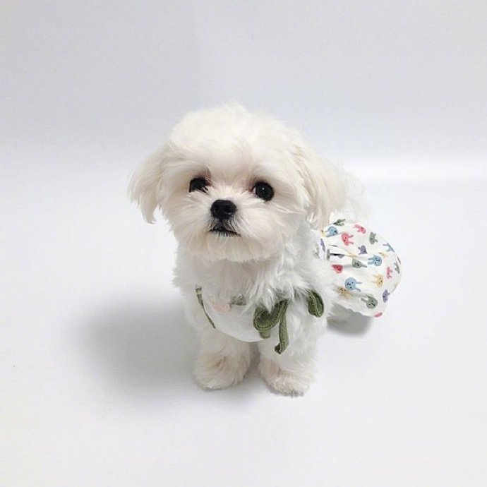

馬爾濟斯

特徵
迷人的玩偶體型，無辜大眼，黏人的個性，年齡可至15～25，屬於長壽的家犬，馬爾濟斯成犬體長約40公分，腳長約12公分，體重介於1.5~3.2公斤。背毛為白色的絲狀柔軟細毛，能生得很長，有時會泛有一點點淺黃色。腹部可以看見粉紅色的皮膚。眼睛、鼻頭、腳掌皆為黑色（幼犬期的腳掌為粉紅色）。耳朵呈下垂狀的三角形，警戒時也無法完全豎起。尾巴通常會捲於背上或腹部下。
性格
馬爾濟斯的性格相當溫馴乖巧，不怕生，很好客，很顧家，很會撒嬌。雖然有時會出現小型犬多有的神經質本能、容易緊張的一面，但基本上仍屬於容易飼養照料的犬種。
歷史
馬爾濟斯」是因為起源於地中海的馬爾他島而得名。Comforter，意為療癒撫慰人心的狗。古代人相信將瑪爾濟斯放在身上不舒服的地方可以幫助症狀緩和，因此有療效之意。緋尼基人航行到馬爾他島，他們所帶來的犬種在幾經配種繁衍後，產生了馬爾濟斯種，是最古老的賞玩犬種之一。馬爾濟斯的祖先大約在古羅馬時代就已被引進到歐洲，馬爾濟斯犬並不被當作看家犬，而是王公貴族等上流階級的寵物。在英國，伊麗莎白一世在位時，馬爾濟斯犬特別受到歡迎。蘇格蘭女王瑪麗一世在1587年被處決時身邊仍帶著的寵物就是馬爾濟斯犬，說明了馬爾濟斯在古時歐洲上流社會廣受喜愛的情況。
飼養注意事項
瑪爾濟斯的食量很小，但對很多食物都有興趣，應避免養成其挑食的習慣。同其它犬隻一樣，不可給於過於調味的人類食物。瑪爾濟斯的長毛是照顧的重點，如果不時常修剪梳洗，細而柔的長毛很容易糾纏成毛球，所以也常有飼主將其修剪為短毛型，減少麻煩。因為基因缺陷的遺傳性問題容易導致白內障、心臟病、氣管塌陷等問題，會發出類似咳嗽但尾音較高亢的聲音。